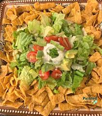

Frito Pie

Descrption
Frito Pie is a simple and delicious staple in my household. There are a few ways to make it. I'll show you the most recent one I've learned.
Ingredients
- Fritos
- White Rice
- Lettuce
- Ranch style beans
- Cheese
- Cholula or any other hot sauce
Steps
- Boil some water and make your white rice first.
- Add your beans to a pot and keep it on low.
- Once the rice is done, you're ready to put all the ingredients in a bowl.
- I start with a bed of fritos, then rice, beans, cheese (to melt on the warm beans), lettuce, and hot sauce.
- Done. An even easier version is to just use fritos, beans, and cheese.